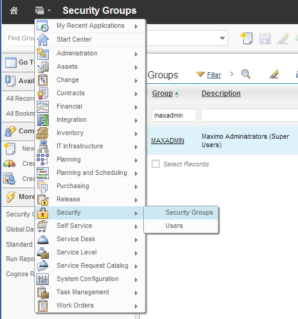

General
The EAM Importer for IBM Maximo processes data which is available in the Excel File format (XLS files from Excel 95, 97, 2000, XP and 2003). Since version 2 the EAM Data Management Tool can also process the new XLSX file format which is used from Excel 2007 onwards. As a precondition to use the mentioned tools you need access to the corresponding menu entries. Access can be granted in the Security Groups application which can be opened from the Go To menu (see Illustration 4: Open the Security Groups Application)

Illustration 4: Open the Security Groups Application
The Maximo administrator can then enable or disable the individual signature options for the selected Maximo application. The following Illustration 5: EAM Signature Options in Security Gr oup application shows the Security Group Application (in SCCD with tivoli13 skin). All the EAM Signature Options are enabled for the Locations application.
Illustration 5: EAM Signature Options in Security Group application
The Importer has three operational modes:
- The Simple Import (see chapter maximex Simple Import)
- The Specification Import (see chapter maximex Specification Import)
- The Extended Import or 1:n Import (see chapter maximex Extended Import)
The Simple Import allows you to import or update "flat" data in Maximo. With the simple import you cannot add or modify specification attributes or child objects. You may know this functionality from previous versions of this product.
The Specification Import enables you to import or update Maximo objects with specification attributes like assets, locations or tickets. Specification data is imported together with the main object from one data source.
The Extended Import allows you to import or update Maximo objects together with corresponding data in child data sets like ASSET with SPAREPARTS or JOBPLAN's with their corresponding JOBTASK data.
All import modes share common concepts. For every import mode you can:
- Download an empty Microsoft Excel Template
- Choose "EAM Template Generator" to download an importer template for the Simple Importer (without specification attributes or related child data)
- Choose "EAM Template for Spec Data" to download an importer template with specification data
- Choose "EAM Generate extended XLS Template" to download an importer template with related child data.
- Download the current records in the application list view (the current search result) as a Microsoft Excel file.
- Choose "EAM XLS Searc hresult Download" to download the current search result of the application without specification data or related child data
- Choose "EAM XLS Searchresult with Spec Data" to download the current search result of the application with its specification data at tributes
- Choose "EAM XLS Extended Searchresult Download" to download the current search result with child data.
- Import new or modified data into Maximo. This is accomplished with the menu entry "EAM Data Importer". The software automatically detects the im port mode to use.
maximex is not a Maximo application. Instead it is a set of
"Select Action" menu entries which can be installed and enabled in (almost) any
Maximo application where you want to have the tools available.
The action menu of an IBM Maximo application can contain the following menu items
(depending on the application, the license, the installation or the security setting only
some of these menu items may be available to users):
Illustration 6: Import modes and corresponding menu entries
If you are using IBM Smart Cloud Control Desk 7.5 or Maximo Asset Management 7.5.0.2 with enabled side bar maximex components are also available in the sidebar of your Maximo application (see Illustration 8: Sidebar Menu in SCCD 7.5.1).
Some often used features of maximex are also available in thesearch bar. The data import is the default action when you click on the search bar entry, other options can be selected from the drop down list of the entry.
Illustration 7:maximex Searchbar Menu
Illustration 8: Side Bar Menu in SCCD 7.5.1
The following chapters describe each import mode in detail.
Importer Processing Modes
The EAM Data Importer has two processing modes:
Stop on Error Mode: This is the default mode and is available since the first version of maximex. In this mode the import stops after the first error. A detailed error message is displayed to the user (usually with the line number where the error occurred).
Continue on Error Mode: If an error occurs in a line in the Excel file the error message is not displayed to the user. Instead the error message is written in the column $IMPORTERROR in the Excel import file. Furthermore the import is not stopped, but continues with the next line in the Excel file. After the import the user can filter the column $IMPORTERROR and find those objects where an error occurred. If the error can be traced to a specific attribute, then this attribute is marked with a red background color. This mode is very useful if the data quality of your input data is not perfect and errors might occur. (An example might be that you want to import new assets with their location but corresponding location entries might not be available).
To enable the Continue on Error mode you simply create a column with the name $IMPORTERROR (the leading $ sign is important! This distinguishes the column from regular attributes). The position of this column does not matter. The column $IMPORTERROR could be the first column, the last column or anywhere in The column n ame is case insensitive. $IMPORTERROR or $ImportError are both valid. The following example illustrates the behavior of the Continue on Error Mode:
Illustration 9: Excel workshett with $IMPORTERROR column
Above illustration shows an Excel import file for updating some assets. This sheet also contains a column $IMPORTERROR. When importing this file the importer recognizes the $IMPORTERROR column and switches to the Continue On Error Mode. After the import the following summary dialog is displayed to the user:

Illustration 10: Import Summary Dialog for Continue on Error Simple Import
The import summary for this file shows that 4 records where modified and (an additional) 4 records had an error. The final Import file which is pushed back to the client is shown in Illustration 11: final XLS file with errormessages in $IMPORTERROR column. The line height is adjusted because the errormessages in $IMPORTERROR usually have 2 lines.
Illustration 11: final XLS file with errormessages in $IMPORTERROR column
It is easy to see the problematic rows. The user can now correct the errors and reimport the Excel document. It is not required to clear the $IMPORTERROR column. This is done by the importer internally.
If an extended Import is processed (objects with dependent objects like ASSET with SPAREPARTS) the counter for "Records with erros" im the import summary can contain main objects or child objects. If an error is encountered during import of a child object then the error counter is also increased. In contrast to that are the counter for "New records" or "Modified records" only increased for every main object and not for child objects.